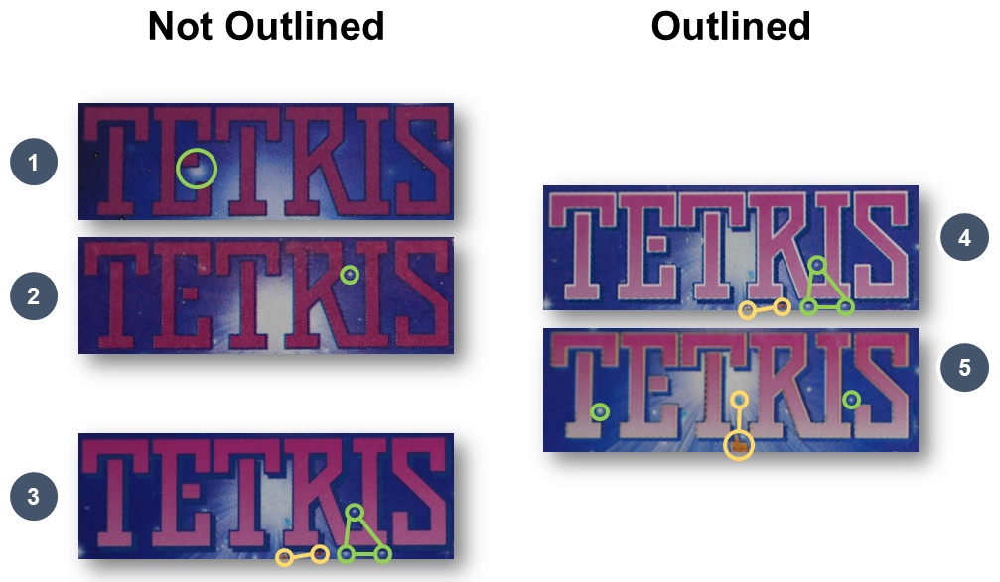
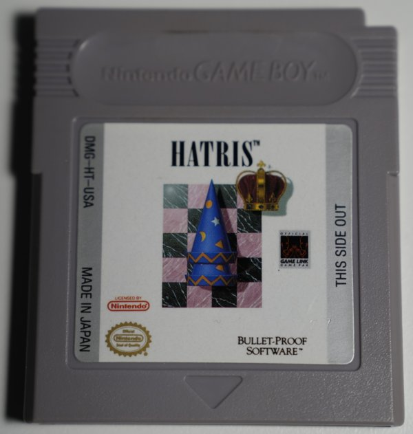
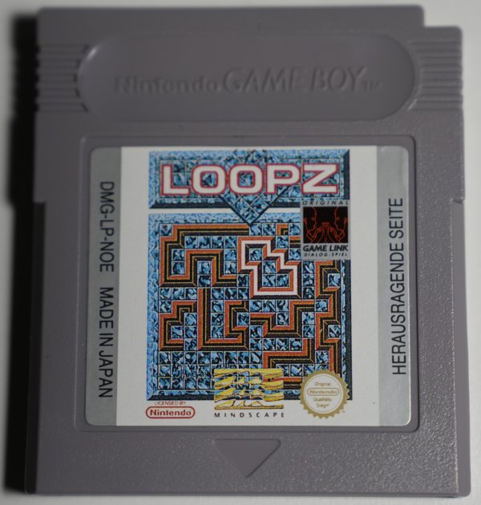
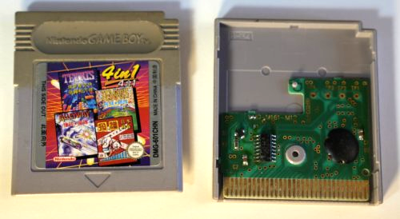
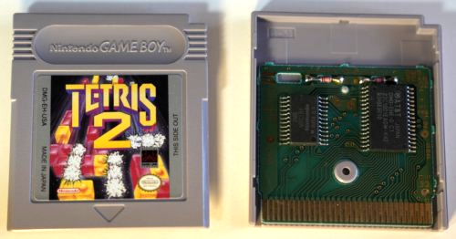
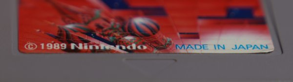
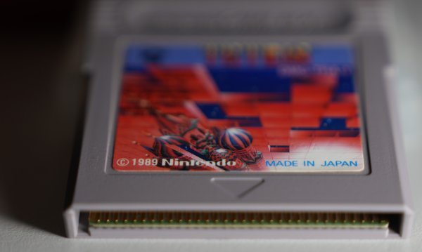
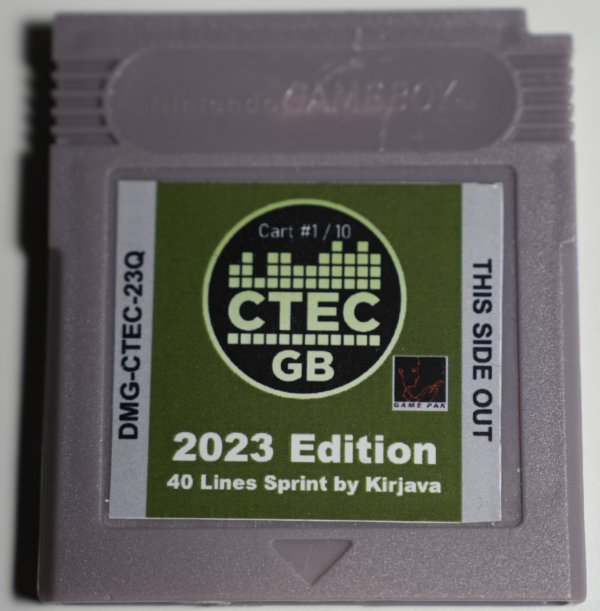

Author: Tolstoj (2025)
Credit
A lot of groundwork has been done by the community, mostly JVOSS in this thread: Somewhat Complete list of Game Boy(DMG) Tetris Variants.
The groundwork for this, in turn, was done by someone unknown who initialized the work of distinguishing Tetris variants.
In order to help me getting some carts for my collection I would like to thank the following people:
- My Sisters Lydia and Ruth for many, many carts
- -JJ (Finland) for the Scandinavian carts
- Arden (Italy) for the Italian carts
- Yelena (Austria, Spain) and Almio for the Spanish carts
If you would like to contribute, find mistakes or have clarification, feel free to contact me and in case your contributions find the way into the text you will be listed as an author.
However, at the moment I lack the means of providing any form of monitary compensation for it.
Disclaimer: GAME BOY is a trademark of Nintendo. Tetris is a registered trademark of The Tetris Company. This text is an independent work and is not affiliated with or endorsed by Nintendo or The Tetris Company.
How many Game Boy Tetris Variants are there?
As far as we know the simple answer could be: 44. But it very much depends on what you would define as a variant.
Let's start simple: It is widely accepted that each different Nintendo code constitutes a variant.
E.g. DMG-TR-NOE ≠ DMG-TR-NOE-1
But apart from this distinctions, further separations can be made - some are more plausible than others:
- ROM differences with the same label (Japanese v1.0 vs v1.1)
- Label revisions
- PCB revisions
- China: FCO carts vs. regular carts (for China only)
- Early and late label revisions (minor changes) with the same Nintendo code
- Different imprints
- Minor differences such as missing dashes, legal annotations etc.
The fact that revisions of the PCB, boxes, label or the ROM revision were many times quite well coorinated but not perfectly, is why you can find "transition" carts / combinations that might already have a revised label but still the PCB typically found in carts with the predecessor label. Depending of the duration of the transition phase, such carts can be difficult to be identified or to be found. Additionally, it makes the exact identifiacation difficult because over the years certain things might have been swapped / exchanged.
| Code | Early | Late | [Code]-1 | [Code]-2 | Region |
|---|---|---|---|---|---|
| DMG-TRA | * | - | Japan | ||
| North America | |||||
| DMG-TR-USA | USA | ||||
| DMG-TR-CAN | Canada | ||||
| Europe | |||||
| DMG-TR-FRG | - | Germany | |||
| DMG-TR-FAH | - | - | France & Holland | ||
| DMG-TR-UKV | - | - | United Kingdom | ||
| DMG-TR-ITA | - | - | Italy | ||
| DMG-TR-NOE | - | Europe, Germany | |||
| DMG-TR-SCN | - | Scandinavia | |||
| DMG-TR-GPS | - | - | - | Greece, Portugal, Spain | |
| DMG-TR-ESP | - | - | Spain | ||
| DMG-TR-EUR | - | - | - | Europe | |
| Asia | |||||
| DMG-TR-ASI | - | - | - | South-East Asia | |
| DMG-TR-ROC | - | - | - | Taiwan | |
| DMG-TR-HKG | - | - | - | Hong Kong | |
| DMG-TR-KOR | - | - | - | Korea | |
| Oceania | |||||
| DMG-TR-AUS | - | Australia | |||
*This is the Japan exclusive v1.0, also known as the Minuet version.
Variants labelled with early and late have the same Nintendo code each, but the late versions have a revised label, that can be identified by the 2 lines of text in the lower part of the player indicator icon - the earlier ones had 3 lines. In most, but not all cases they also have the later PCB type (AAAC-S).
The identified PCB types are:
- Chip: AAA-01, AAA-02, AAA-03
- Globtop: AAAC-S
Special Variants
These are officially released versions of Tetris.
| South America, Brazil | ||
|---|---|---|
| Code | Variant 1 | Variant 2 |
| No Code | Grey Cart | Yellow Cart |
As with all Nintendo products in Brazil, Game Boy Tetris was distributed through the company Playtronic. The label on these versions are quite different (no code, different quality, no imprinted number). Each Playtronic cart has 2 additional stickers on the back side:
- Nintendo, Playtronic authenticity label
- Serial Number
The yellow Playtronic cart is the holy grail of Game Boy Tetris. It is by far the most sought-after cart of them all - it is so incredibly rare that not many are found in the wild. There are hundrets of saved searches with E-Mail notifications set on Ebay containing "Yellow Tetris", "Yellow Playtronic Tetris" or similar terms. Should a cart surface there, it would probably be gone within minutes / seconds. The yellow cart was a Brazilian exclusive release that was bundled with the yellow "Play It Loud"-series Playtronic Game Boy.
| Mainland China | |||
|---|---|---|---|
| Code | International | For China Only | Swapped strips |
| DMG-104 CHN | - | ||
| DMG-601 CHN | |||
China carts are Made in China. They follow a completely different coding consisting of numbers instead of letters for the game. Also there is no second dash in the code.
The utilized PCBs are also very different and were produced by MANI.
How many VERSIONS are there?
The short answer is 2: There is the v1.0 (Minuet) version and all the other ones are version 1.1.
Introduction
My insane Game Boy Tetris Collection
Tetris was programmed in Sovjet Russia in 1985 (officially 1984) by Alexey Pajitnov (Алексей Пажитнов). He called his game Tetris. The name is supposedly a combination of 2 words: Tetra, Greek for 4 and the suffix -is comes from Tennis, Alexey's favorite sport.
The whole licensing chaos caused by various actors brough Tetris to Western Europe and the USA. Tetris was then brought to Japan by Henk Rogers via his company BPS and later he also secured the rights to consoles and handheld for Nintendo, which started distribution in Japan and expanded shortly after in the USA and the rest of the world.
Nintendo Tetris for the Game Boy was released in 1989 in Japan (June 14th) and later that year (July 31st) in the USA. Europe and the rest of the world had to wait until September 28, 1990. Some regions might had to wait until as late as 1996.
As a reference, the Berlin Wall was torned down November 9th, 1989 which places the major initial releases in this very influencial time frame.
Tetris for the Game Boy was produced between 1989 and at least until the end of 1997 and was later officially distributed by other means e.g. for the Nintendo Power carts to write to re-writeable carts in Kiosks, the Nintendo DS or the Nintendo Switch (NSO sevice).
The rights to Tetris for handhelds were secured by Henk Rogers through its company (Bullet-Proof-Software, BPS) and the Russian agency of import and export of electronic goods ELORG (Electronorgtechnica) to Nintendo. This chain of licensing is part of probably the most extreme cases of “licensing wars” for videogames which in this time was pretty common practice. The chain ELORG→BPS→Nintendo can be seen on the legal texts on the box, the manual, the cart label and in game.
Many business decisions in the late 1980’s and early 1990’s were influenced by the newly lifted divide of the East (communistic) and the West (capitalistic). This divide was known as the “cold war” and Tetris with its origins in Sovjet Russia was right in the middle of all of its chaos.
Distributing goods worldwide back then must have been a huge hassle. Rules, regulations and laws in different regions made it difficult, or sometimes even impossible to serve their markets in a unified way. Nintendo being an infamous juggernaut, was no stranger to worldwide distributions of goods such as consoles and games.
Yet, most parts of the East, reffering to countries previously led under communistic rule, were still not considered by Nintendo. That’s why many eastern European countries did only experience gaming through exotic hardware or clone consoles. This is a topic for another time.
When distributing games to foreign markets, Nintendo often had to rely on domestic distributors. These could be managed by their own (e.g. Nintendo of Europe) or independent distributors (e.g. Bienengräber or Playtronic). Sometimes the governments of countries regulated the distribution themselves (e.g. Mainland China or Korea). China being the most extreme case where components were domestically produced instead of receiving parts from Nintendo. Parts were mostly imported from Japan (Nintendo of Japan).
Some distributions had overlapping markets, e.g. NOE, FRG, FAH, EUR… but I’m getting ahead of myself.
Tetris in its essence is a very simple game that fits neatly in a single ROM bank (32kb) and did not require sRAM to save data on its cart (what a shame really) or an MBC (memory bank controller) chip to manage ROM bank switching to the adress space of the Game Boy. On the other hand, it was supposed to act as a flagship to showcase the devices range of functions with the addition of a 2-player link functionality via Link cable.
On a low level, Game Boy Tetris, consisting of 3 modes: A-Type (marathon), B-Type (downstack survival) and the 2-Player mode via link cable.
There exist 2 different ROM variants: Version 1.0 was exclusive to Japan as the very first batch. This version contains some minor bugs, a typo (Bullet Proof instead of Bullet-Proof), and a completely overhauled level advancement system among some other minor differences. Arguably, the most influential choice was to change the A-Type melody from a Minuet to the now legendary tune of Korobeiniki, well, Nintendo’s version of the traditional Russian folklore song.
Version 1.1 was released in Japan as well as the rest of the world, which makes up the vast majority of carts in circulation. Later revisions did not affect the game play but mostly external properties, such as the label, the PCB, the ROM chip or the plastic shell.
We’ll delve into these differences by examining the known regional releases and revisions one-by-one by investigating all differences on the carts.
Tetris in Different Languages
| Name | Language | Writing System |
|---|---|---|
| ТЕТРИС or Тетрис |
Russian | Cyrillic |
| テトリス | Japanese | Katakana |
| ТETRIS or Tetris |
International | Latin |
| 俄罗斯方块 | Chinese | Simplified Chinese |
| 俄羅斯方塊 | Chinese | Traditional Chinese |
Russian
The cyrillic alphabeth shares a great portion with the latin alphabeth.
| RU | LAT | ru | lat |
|---|---|---|---|
| Т | T | т | t |
| Е | E | е | e |
| Р | R | р | r |
| И | I | и | i |
| С | S | с | s |
- Capital letters: RU = Russian / LAT = Latin
- Lower letters: ru = Russian / lat = latin
Japan
Pronounciation:
- Tetorisu (Hepburn)
China
Translation: "Russian Blocks"
- 俄罗斯 or 俄羅斯 = Russia
- 方块 or 方塊 = blocks (or tiles)
Pronounciations:
- Éluósī fāngkuài (Mandarin)
- Ngòh lòh sī fōng faai (Cantonese)
Boxart
In Europe and the USA, Game Boy Tetris was a boxing title for the Game Boy. Therefore, many games did not come in their own box but were rather bundled with the Game Boy in its box.
I will admit, I'm not an expert on boxes and the information provided here might not be fully accurate nor complete.
Japanese Boxes
The smaller, Japanese boxes had at least 3 revisions whose differences can be found on the backside. Note that the box revision 1a was done during the Minuets lifespan. That's why Minuet can be found in both early box types.
- Layout 1a, BULLET PROOF SOFTWARE
- Layout 1b, BULLET-PROOF SOFTWARE
- Layout 2, The Tetris Company
Interestingly, all of the boxes share the same bar code: T4902370500950
Another thing to note is the change of Pajitnovs last name. Since there is not always a one to one mapping from cyrillic letters to latin letters, certain assumptions have to made, mostly based on phonetics. Initially his last name was written as PAZHITNOV and later as Pajitnov.
International Boxes
International boxes came in various languages such as English, German or French.
Twin Pack
There is a special Twin-Pack box, where Tetris and Tetris 2 were sold together. I find it quite ironic that this original box shows the 1-player indicator instead of the 2-player indicator on the Tetris side (left).
The Game Boy Tetris Logos
The Bullet-Proof Style Logo
Even though Nintendo produced Game Boy Tetris, Bullet-Proof-Software convinced Nintendo to use their Tetris logo, at least for the Japanese Market, as well as in-game on both: The Game Boy and the NES version. Bullet-Proof Software was Henk Rogers company that existed since 1983. Before the Game Boy (and the NES) versions, they released at least 2 Tetris variants. Both of these versions had the same logo, which uses the Futura Black font face. This logo-type continued to be used on countless other versions.
The later, very well-known "Tetris Melody" was used before in earlier BPS releases. This Tetris melody is the A-Type melody on v1.1 and is based on the traditional Russian folk song Korobeiniki (aka Korobushka).
Which means that not only did Henk Rogers convince Nintendo to use his logo, but also later the melody - what a great idea in hinsight! But quite frankly, Nintendo owed him big time for securing the the rights.
The Korobeiniki as used in the Game Boy version, is culturally deeply connected to Tetris in the minds of people.
The story is very similar to the melody of Super Mario World for the SNES. In this case the melody from the song "Green Green" first entered Japan and was then caught up by the composer and a rendition was used in game.
The original Korobeiniki is in parts quite different to the Tetris Melody. But in 1962, long before Tetris, the Korobeiniki was adapted:
| Super Mario World (SNES) | Tetris | |
|---|---|---|
| Original song | Green Green | Коробейники |
| Japanese transcription | グリーン・グリーン | コロブチカ (フォークダンス) |
| In-game rendition | Super Mario World Theme | Game Boy Tetris A-Type melody (v1.1) |
It is likely no conincidence that this rendition very closely resembles the Tetris melody - moreso than the original Korobeiniki.
- Logo from the BPS Tetris (1988)
- In-game logo Game Boy Tetris (tile-based)
- In-game logo NES Tetris (tile-based)
- Logo on the Japanese cart label
- Logo on the Japanese box
- Japanese logo on the Japanese box
Note that the logos in 4 and 5 resemble more closely the in-game logo from the NES version rather than the original font face (Futura Black)... Interesting!
The logo is often subdivided into 4 vertical colors which mostly follow a yellow to orange gradient.
The International Style Logo
A new logo was created for the American / International market. This logo is found on the labels, other than the Japanese ones, and the box art. The artwork (box and label) is shared with the NES version.
The Label Types
Every game collector can confirm, that when it comes to Nintendo, Japanese and international artwork is in general different - Game Boy Tetris is no exception. There are various reasons for this. The general building blocks are the following:
The Japanese Labels
The division into an upper strip and artwork is not a fixed rule but rather a deliberate choice by the graphic designers and, potentially, the marketing team.
While on other games, the label typically includes most of these elements, their exact positioning was somewhat flexible. This variation is more pronounced in Japanese cartridges compared to their international counterparts.
The International Labels
Low Contrast and High Contrast Label Revisions
Ignore the other elements on the label.
The artwork was basically overhauled while staying as true to the previous label as possible.
- A: Solid color → gradient
- B: Dark outlines → bright outlines
- C: Drop shadow added
- D: Regions darkened or brightened
- E: Brighter lines
- F: Dark outlines removed
- G: Stars re-drawn
- H: Background elements moved upwards
The coloring in the T-blocks in the stack for example have been shaded differently. They went from a radial gradient to a linear gradient. This indicates that the coloring likely has been done from scratch.
In order to give the artwork more contrast, and therefore make the elements more distinguishable, some measures were taken over time. Most notably the letter outlines.

Identifiers
- Green: Stars
- Yellow: Falling Tetrominos
| Logo Type | Font Color | Letter outlines | Drop Shadow | Background Art | |
|---|---|---|---|---|---|
| 1 | s1 | Solid | No | No | 1 |
| 2 | s2 | Solid | No | No | 2 |
| 3 | i | Gradient | No | Yes | 3 |
| 4 | o1 | Gradient | White | Yes | 3 |
| 5 | o2 | Gradient | Yellow | Yes | 4 |
Logo Type: s = solid letter color, i = intermediate, o = outlined letters
Very intersting is that s2 seems to be even a newer label revision than the outlined ones and seems only been used in the DMG-TR-EUR version which might be released as late as 1997.
This Side Out Text
I call this the dummy text because it was supposed to signal to the user to insert the cart such that the label facing outwards.
No one ever read that, and no kid understood the meaning of it... ever!
Fun fact: The word "Herausragend" in German has two meanings:
- Outside-facing
- Outstanding
| Label | Language | Translation |
|---|---|---|
| THIS SIDE OUT | English | |
| HERAUSRAGENDE SEITE | German | Outside-facing side |
| ESTE LADO PARA FORA | Brazilian Portuguese | This side (for) outside |
| CE CÔTÉ À L’EXTÉRIEUR or CE COTE A L'EXTERIEUR |
French | This side at the outside |
| ESTE LADO HACIA AFUERA | Spanish | This side towards outside |
| LATO ESTERNO | Italian | Outer side |
| 此面向外 | Simplified Chinese | This side outwards |
| 표면 | Korean | Surface |
| 本側向外 | Traditional Chinese | This side faces outward |
For multilingual regions, e.g. FAH, EUR, CAN, labels are written in more than one language.
Manufacturing Origin
The parts for almost all carts were manufactured in Japan. The exception in China, who took production in their own hands.
| Text | Language |
|---|---|
| MADE IN JAPAN | English |
|
FABRIQUÉ AU JAPON or FABRIQUE AU JAPON or FAIT AU JAPON |
French |
| FABBRICATO IN GIAPPONE | Italian |
| MADE IN CHINA | English |
| 中国制造 (Made in China) | Chinese |
Nintendo Seal of Quality
The Seal of Quality is a proof, that the game was endorsed by Nintendo.
The general rule for the Seal of Quality is as follows.
- Missing label: Japanese cart
- Oval: USA or Canada
- Round: Anywhere else
As pretty much always, there are exceptions to this rule. In Game Boy Tetris, however, this rule is holds pretty solid.
| Top row | Original | Official | Official / Officiel | Original | Official | Bottom row(s) | Seal of Quality | Selo de Qualdade |
Seal of Quality Sceau de qualité |
Qualitäts- Siegel |
Seal of Quality |
|---|---|---|---|---|---|
The Nintendo Code
The code on Game Boy games is mostly found on the left strip. And follows the form:
| Code | Example | |
|---|---|---|
| International | [Platform]-[GameID]-[Region]{-[Label Revision]} | DMG-TR-NOE-1 |
| Japan | [Platform]-[GameID]{-[Label Revision]} | DMG-TRA |
| Mainland China | [Platform]-[Region][GameID] | DMG-104CHN |
- [ ] – Content (variable).
- { } – Optional elements that may or may not be included.
Platform
Each Nintendo platform has an identifier. Game Boy has the following:- DMG: Dot Matrix Game, which is the code name for the first Game Boy (the brick).
- CGB: Color Game Boy
- AGB: Advanced Game Boy
Tetris was released on the DMG.
Sidenote: Tetris DX is somewhat close, but due to its physics, very different from Tetris. Tetris DX is a dual cart.
GameID
Each official game is listed with a unique identifier (usually 2-5 letters). This identifier in most cases is derived from the game title and its origin can be reconstructed. Since Japan lacks the location part of the code, and the GameID can be different. The exception is China, where numbers are used instead of letters.- TR (International)
- TRA (Japan)
- 104 (China)
Region
(Not present on Japanese games)Distribution regions have special 3-digit region codes. The Tetris-specific list can be found later.
Nintendo is extremely secrative, when it comes to their codings. Finding out about their system is mostly due to community efforts that reverse-engineered the logic.
In the case of the codes and their meanings, we have a very good idea but it must be stated that these are conclusions. The list contains all found regional codes and revisions for Tetris. There are further identified region-codes that are not found on Tetris carts. Even though, we are confident that the list is complete, there is still a chance for it to be incomplete.
| Region | Name (Suspected) |
|---|---|
| USA | United States of America |
| CAN | Canada |
| FAH | France And Holland |
| SCN | Scandinavia |
| AUS | Australia |
| UKV | United Kingdom Version |
| NOE | Nintendo Of Europe |
| KOR | Korea |
| ESP | Spain (España) |
| FRG | Federal Republic of Germany |
| ITA | Italy |
| HKG | Hong Kong |
| ASI | Asian Markets (likely Southeast Asia) |
| ROC | Republic Of China (Taiwan) |
| GPS | Greece, Portugal, Spain |
| EUR | (Continental) Europe |
| CHN | (Mainland) China |
No regional code exist for:
- Japan
- Brazil
Label Revisions
The revisions in the Nintendo code of Game Boy Tetris does not concern differences in the game (ROM) but rather only differences in the label art. We will talk about revisions in more detail later.
There is at least one label revision type that is not immediately apparent from the Nintendo code. We will discuss these later.
For several regions there are label revisions with numbers 1 and 2.
The Curious Case of Missing Dashes on USA versions
Some early USA versions have faded or missing dashes. This can be either a worn-out dash, one missing dash or both missing dashes.
While some collecters regard these as separate versions, many speculate that the origin is likely due to a faulty printing process where the black ink was slowly fading. Nevertheless, not a bad thing to own them.
The image above strongly supports the depletion / fading theory. (Image credits: fading and one dash: Pichaco)
Player Indicator Icon
Only the international carts have text in the player indicator icon. There exist multiple text variants. An important distinction is in the length of the bottom text. Carts with labels that have 2-lined texts in the bottom will be distinguished from the ones that have 3-lined texts in the bottom text. The reason for this distinction will become clear in a bit.
We add the letter A to the Nintendo Code, if the bottom text consitst of 2 lines.
E.g. we distinguish:
- DMG-TR-FRG (3-lined text)
- DMG-TR-FRG-A (2-lined text)
3-lined texts
| International | Germany | International 2 | Canada | |
|---|---|---|---|---|
| Top Text | ORIGINAL | ORIGINAL | OFFICIAL |
OFFICIAL OFFICIAL |
| Bottom Text |
GAME BOY VIDEO LINK GAME PAK |
GAME BOY VIDEO LINK- DIALOG-SPIEL |
GAME BOY VIDEO LINK GAME PAK |
GAME LINK GAME PAK LOGICIEL |
2-lined texts (A)
| International | Germany | International 2 | Canada | Canada 2 | |
|---|---|---|---|---|---|
| Top Text | ORIGINAL | ORIGINAL | OFFICIAL |
OFFICIAL OFFICIAL |
OFFICIAL OFFICIEL |
| Bottom Text |
VIDEO LINK GAME PAK |
GAME LINK- DIALOG-SPIEL |
GAME LINK GAME PAK |
GAME LINK GAME PAK |
VIDEO LINK GAME PAK |
The Imprint
It is not clear what these imprints stand for exactly. Several theories are present, mostly revolve around factories, production lines or places.
What is known:
- they underline authenticity
- a letter after the number indicates a ROM revision
Suspected and Confirmed Imprints
| v1.0 | JP | v1.1 | JP | Int |
|---|---|---|---|---|
| 00 | - | 00A | ||
| 05 | 05A | - | - | |
| 07 | - | 07A | - | |
| 09 | 09A | - | - | |
| 11 | - | 11A | - | - |
| 12 | - | 12A | - | - |
| 20 | 20A | - | ||
| 22 | * | 22A | ||
| 23 | 23A | - | ||
| 28 | - | 28A | - | - |
| 34 | - | 34A | - | - |
*As far as we know, the cart with imprint 22 is the only Minuet version that has the same artwork on the label as the Japanese version 1.1.
It is very well possible that there are other Minuet versions that have the updated label.
I counted the imprints found on my cartridges - excluding the Minuet carts (n = 46). I found that the vast majority of imprints are of type 23A and 22A.
How to Spot the Minuet Version
The right way!
Collectors and interested people were always aware that in Japan, there was an older version of Tetris with a different, somewhat eeiry soundtrack for Music selection A-Type. This melody is now simply known as the Minuet. Hirokazu Tanaka is credited for it's composition.
Initial estimates stated that as little as 10,000 units could have been produced. This number was adjusted upwards over the years. Many sources still state the number 25,000. I'm pretty confident that this number is a vast underestimation of the real production volume.
People slowly became aware that such carts exist and started hunting for them. Ways to easily recognize these carts were made public and people started to order Japanese carts in bulk.
A somewhat viral video in particular by Elliot from The Retro Future by the name "A Version of Tetris You've NEVER Heard of!" and the subequent video I bought 100 copies of Tetris led people to believe that there is a vast scarcity of said carts. In the latter video Elliot ordered a huge amount of carts and none of these contained the Minuet version. People in the comments pointed out that this lot might have been from a person who themself were looking for these carts and sold the left over.
In Japan people became aware that Westeners were eager to get their hands on such a cart and prices quickly went up. However, more and more carts surfaced and slowly but surely the hype started to settle a bit. Don't get me wrong, it's still a sought-after item, but the big hype and the enourmous prices went down for the most part.
PCBs
Tetris fits neatly into 32KB of ROM space without the need of an MBC (memory bank controller) or sRAM. This makes the cart as simple as can be. Earlier iterations of the game used the AAA Boards - these are boards with a single ROM chip and a resistor. They came in 3 iterations. Conviniently named 01, 02 and 03.
Example: DMG-AAA-02
When bigger games came along, the AAA boards became less and less important and a new, way cheaper single-chip board was introduced.
This new board by the name AAAC-S came untypically with a globtop ROM chip, which is way cheaper to produce. Functionally the board is identical.
As far as I'm aware, Tetris is one of the only, if not the only game that used these boards.
Example: AAAC-S
Ironically boards containing globtop ROM chips are usually a tell tale sign that the board is not genuine. The exeptions are the AAAC-S and the BBAC S boards.
DMG-AAA-[XX] Boards
AAAC-S Boards
ROM Chip and Production Data
Regular ROM chips provide perfect surfaces to print information on it. Globtops can not be written on - therefore on AAAC-S boards, the relevant info is directly written onto the PCB in the right-upper corner.
Coded in this section is
- the Japanese Nintendo Code (because "Made in Japan")
- DMG-TRA-0: Minuet, aka. v1.0
- DMG-TRA-1: Revision A, aka. v1.1
- basic information about the chip
- the production date / week (2 digits each)
- year
- calendar week (01-52)
- unknown digit (letter D or E or number)
The Plastic Parts (Front / Back)
Each cart consists of a back and front half, made of plastic. The front half has the label sticked onto and the back contains the manufacturing origin of the plastic parts.
As stated previously, all parts were manufactured in Japan and shipped to the distribution centers. Except for the Chinese parts, that were made in China. Therefore, we can find:
- MADE IN JAPAN
- MADE IN CHINA
Below the origin declaration, the inscription PAT. PENDING can be seen. This signals that a Patent has been filed but not been registered.
Back- and Front Numbers
Each plastic part contains an identifier. F for front and B for back followed by a dash and a number.
e.g. F-15 / B-31
The numbers span from 1 to 60 and front and back are independently joined. They don't seem to have any further function.
The range 1-60 leads me to believe that these parts were punched in arrays of maybe 10✗6 and were then collected in containers and brought to the assembly workers who then randomly picked a front and a back, added the PCB, a sticker and screwed the carts together and put them in the protection cover. There really seems to be no more to it than that. The numbers are very evenly distributed and show no combinatory patterns. I guess the number on faulty parts could indicate which of the spots in the array might exhibit a problem and needs replacement.
One observation however I made, was one single number that did not follow the pattern. This was found on an DMG-TR-EUR cart and was:
F-16-1
The plastic parts were produced in a process called injection molding.
Prototype Cart (1989)
Only one Tetris prototype cart surfaced by now. The contained ROM file is identical to the ROM found on ealier Japanese releases, also known as v1.0 or the Minuet Version.
Image Source: https://hiddenpalace.org/Tetris_(Jun_14,_1989_prototype)
Nintendo Power Cart (2001)
Photo Credit: Original photo: Zero Noun on Flickr Modified by Gazebo with cropping of the photo and removal of the thumbnail (IFD1) EXIF metadata. - Super Famicom Flash Writer.
Very noteworthy is the fact that these re-writable carts were produced in Taiwan.
Japanese Carts
Chinese Carts
Mainland China was the only market that took production in their own hands. This becomes apparent by the arguably worse quality of the materials, distinct PCBs and chips and is notable by "MADE IN CHINA".
In China, Tetris goes by the name Russian Blocks (translated).
俄罗斯方块 (Simplified Chinese)
俄羅斯方塊 (Traditional Chinese)
俄罗斯 or 俄羅斯 (Éluósī) = Russia
方块 or 方塊 (fāngkuài) = blocks or tiles
For China Only Carts (FCO)
There are 2 sets of Chinese carts: International carts and FCO (For China Only) carts. The latter ones indicate that the product is intended for exclusive use within China.
中国地区专用 (Simplified Chinese)
Translation = For use in China region
4-in-1 Carts
Mani








GAME BOY Tetris 1989
Minuet Version (v1.0) - DMG-TRA
The "Minuet Version", owing its name for the distinct A-Type minuet melody, is a precursor to the regular Game Boy Tetris that was later released in the only ever revision, also known as Revision 1, or v1.0.Earlier estimates that there were only ever 10,000 units released, have long been debunked. Still, it's a rather rare version of Tetris.
There are quite a few differences from v1.0 to 1.1 which I will list later in another chapter.
It is believed that there only exist carts with imprints 05, 09, 20, 22 and 23. Where imprint 22 might be special.

The ROM chip of the minuet has the imprint DMG-TRA-0.
Japanese Versions (v1.1)
Japanese carts typically have different artwork than the international ones. For an untrained eye, the Japanese versions 1.1 might look like the 1.0.
The introduction of globtop PCBs: It is believed that the production volume overwhelmed most manufactured. PCB production had to be outsourced and in some cases globtop ROM chips were used. These are way cheaper than regular ROM chips and are usually an indicator that a game is not original. Tetris is here an exception - globtop PCBs are genuine.

Chinese carts (DMG-104CHN)
Chinese carts are also typically different in many ways. Their game identifier part of the code consists of numbers rather than letters - Tetris is "104" in china and "TR" in the rest of the world. They were produced in China instead of Japan. These are usually marked with a "Made in China" instead of the typical "Made in Japan".The manufactoring process was also different, the plastic as well as the PCBs are distinct - manufactored by MANI. The plastic of the Chinese carts is typically way more prone to yellowing and the carts have more issues being recognized during the boot process.
Chinese carts can come in 2 variants: for the international market and "For China Only" (FCO). FCO carts only contain chinese symbols and the other ones contain both Chinese and Latin symbols.


Chinese 4-in-1 (DMG-601CHN)
These carts are special. In China there is a collection of 4-in-1 carts, that each contain 4 games rather than just one. These are the only official carts that have more than one game on them.


Region Of China (DMG-TR-ROC)
I would like to know more about the ROC cart, quite honestly. It also seems to be a chinese cart but follows the international standard with the letters and the artwork.Hong Kong (DMG-TR-HGK)
Hong Kong was at the time under British rule and therefore follows the international, rather than the Chinese standard. These carts are Made in Japan.
Korea (DMG-TR-KOR)
Korea too has a very interesting history concerning licensing agreements. A lot of consoles were sold differently using different manufacturers as in other countries. The Korean Game Boy for example differs a bit from the other Game Boys - it's sometimes called the KOMBOY.South-East Asia (DMG-TR-ASI)

U.S.A Versions (DMG-TR-USA)
Canada and the USA are usually the only markets that use oval seal of quality rather than the round ones. There are some exception to this but it is in general a good indicator to find US and Canadian carts.


Canadian Versions (DMG-TR-CAN)
Canadian carts are also quite distinct. Since canada is partially English and partially French, both languages can be found on the labels.

Australian Versions (DMG-TR-AUS)


European Versions (DMG-TR-EUR and DMG-TR-NOE)
NOE stands for "Nintendo of Europe" and is situated in Germany where most NOE carts can be found.









